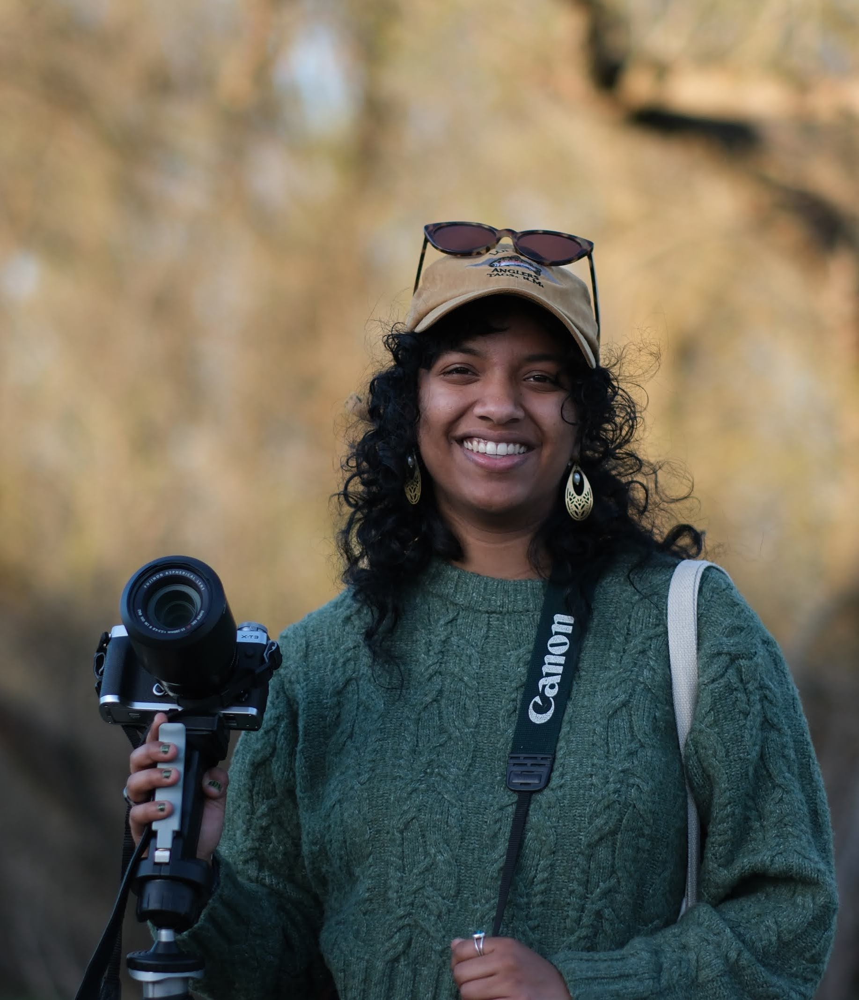

about me

Hi! 👋 I'm Zahra, a product designer based in Sacramento 👩🏾💻. I have been designing and coding for the web since 2019, working as a UX/UI designer and front-end developer, focused on environmental communication and public engagement 🌱.
I am currently a Communications Fellow (with California Climate Action Corps ↗) at the California Natural Resources Agency ↗. I'm passionate about using communication and design to connect people to the complex systems that shape their everyday lives, particularly the places and infrastructures that often remain invisible to those who live alongside them. My work translates these systems into accessible, engaging experiences for public audiences, with a focus on fostering inclusion and environmental awareness.
I completed my MFA in Interactive Design at UC Davis in June 2026. For my thesis, I developed communication tools that translated environmental data and field research into engaging educational experiences centered on the ecology of California's Yolo Basin, a 59,000-acre seasonal floodplain that most people drive past without ever stopping. I walked and photographed the basin across seasons, mapped its spatial patterns, and created a set of outputs including posters, zines, an interactive website, and a physical exhibition. My goal was not just to convey facts about the basin, but to give the community an entryway to notice it, and to eventually grow to appreciate and value it. You can read more about this project here ↗. While completing my degree, I served as a teaching assistant for the Interactive Design Series at UC Davis, where I help students learn how to code for the web using HTML, CSS, and JavaScript.
I earned my undergraduate degree in 2024 in Human-Centered Design at UC Berkeley, an interdisciplinary program blending design, sociology, psychology, geography, and technology, along with a Certificate in Design Innovation ↗. While at Berkeley, I founded the DEI Officer role (now known as DEIB short for: Diversity, Equity, Inclusion, and Belonging) within the Human-Centered Design Club, Berkeley Innovation ↗, to promote greater accessibility in design communities.
Outside of design, I like to sketch, paint in gouache, knit, sew and mend, bake sourdough, shoot on film, train for marathons, and learning bluegrass banjo! I also run a small handmade art business, Trinkets by Pickles ↗. I still find that even when I'm not on the clock designing, I spend my free time still doing so such as coding databases for my favorite video game Animal Crossing.
selected work
showing all 8
-
Guest, Yolo Backyard Bulletin
-
Floodplain Futures: Designing for Shared Ecological Understanding
-
Presenter @ California Trails and Greenways Conference
-
Bots ‘n’ Beings: AI Futures beyond Big Tech’s efficiency driven Agents
-
Leveling up during lockdown: The surge of social gaming in college students during COVID-19 and its post-pandemic implications
-
Collaboration, confidence, critical thinking: CITRIS internships teach UC students essential skills
-
Enhancing Situational Awareness and Patient Safety in Pediatrics Through Virtual Simulation
experience
skills
tools
roles
current roles
-
Communications Fellow @ California Natural Resources Agency
-
Member, Civic Arts Advisory Board @ City of Davis
teaching
-
Graduate Teaching Assistant @ UC Davis Department of Design
design & communication
-
Park Interpretive Specialist @ California State Parks
-
Lead Designer @ NeoNiche
-
Intern, Workforce Innovation Program @ CITRIS and the Banatao Institute
consulting & leadership
-
Product Design Consultant @ Berkeley Innovation
-
Founding Director of Diversity, Equity & Inclusion @ Berkeley Innovation
earlier experience
-
UX Design Intern @ Beehively
-
Intern @ UC Davis Center for Simulation and Education Enhancement
-
President, Teen Animators Club & Teaching Assistant @ Davis Media Access
want to talk?
open to new rolesI'm currently based in Sacramento, CA. If you'd like to chat about potential opportunities, collaborations, or just want to say hi, feel free to reach out!
you could also find me at the links below, be forwarned i'm not the best at keeping up with social media! however some i am more active than others.